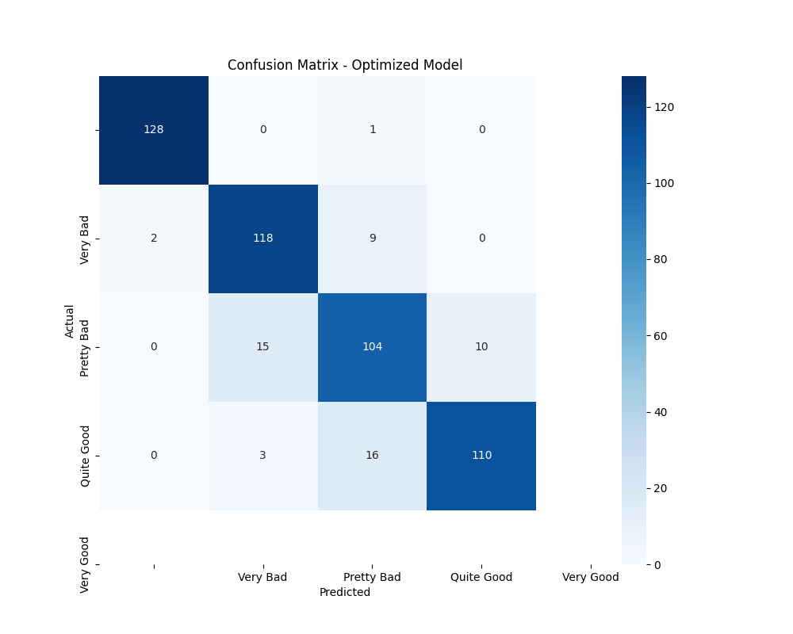
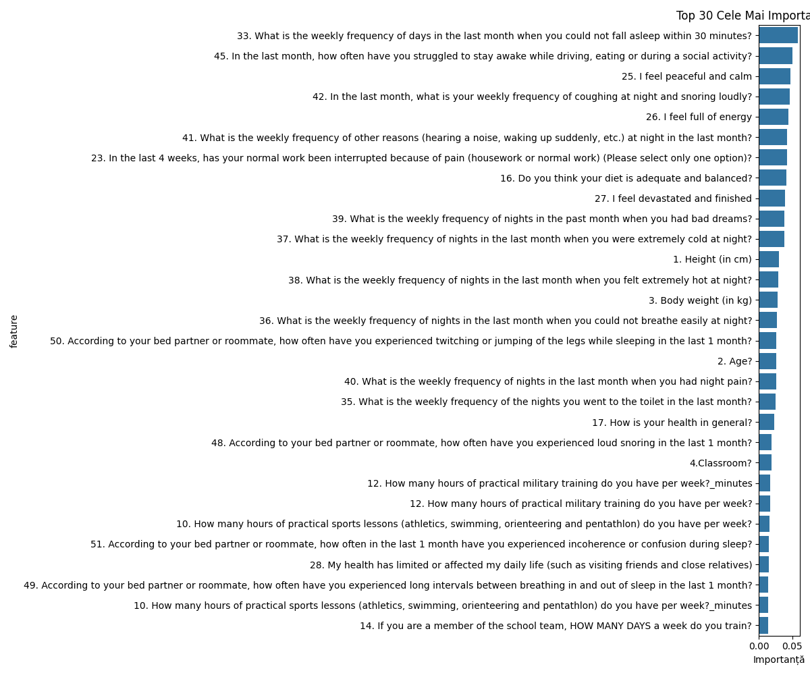

Military Sleep Quality Analysis Report
Report Date: 12 May 2025
Executive Summary
This report presents the analysis of 1022 military personnel to understand the factors influencing sleep quality in challenging environments. We identified significant correlations between environmental factors and sleep quality, using machine learning models for prediction.
Key Findings:
- Our optimized model can predict sleep quality with an accuracy of 89.1%
- 19.4% of participants report problematic sleep ("Pretty Bad" or "Very Bad")
- Environmental factors have a significant negative impact on sleep quality
- Key personal factors like energy levels and stress also strongly influence sleep quality
1. Sleep Quality Distribution

Observations:
- 80.6% of participants report good sleep quality ("Quite Good" or "Very Good")
- 19.4% report problematic sleep ("Pretty Bad" or "Very Bad")
- Average sleep quality score: 2.95/4
2. Main Factors Influencing Sleep Quality

Top 5 Factors (in order of importance):
- What is the weekly frequency of days in the last month when you could not fall asleep within 30 minutes? (5.9%)
- In the last month, how often have you struggled to stay awake while driving, eating or during a social activity? (5.1%)
- I feel peaceful and calm (4.8%)
- In the last month, what is your weekly frequency of coughing at night and snoring loudly? (4.6%)
- I feel full of energy (4.4%)
3. Impact of Environmental Factors
Environmental factors such as temperature extremes, noise, and air quality have significant impacts on sleep quality:
- Nighttime noise is one of the most disruptive factors
- Temperature extremes (both cold and hot) negatively affect sleep quality
- Breathing difficulties during sleep are strongly correlated with poor sleep quality
4. Sleep Patterns
Key Correlations:
- Sleep Duration vs Quality: Longer sleep duration correlates with better sleep quality
- Sleep Latency vs Quality: Longer time to fall asleep correlates with reduced sleep quality
- Multiple Night Awakenings: Strong negative correlation with sleep quality
Interpretation:
- More hours of sleep = better quality
- Longer time to fall asleep = worse quality
- Multiple awakenings = worse quality
5. AI Model Performance
Model Results:
- Overall Accuracy: {model_accuracy:.1%}
- Best at Predicting: "Quite Good" sleep quality (highest recall)
- Challenges: Extreme categories ("Very Bad"/"Very Good")
6. Recommendations
For Improving Sleep Quality:
- Noise Control
- Implement sound insulation measures
-
Use earplugs or white noise
-
Temperature Management
- Maintain room temperature between 18-22°C
-
Ensure adequate ventilation
-
Sleep Routine Optimization
- Consistent bedtime
-
Reduce time to fall asleep through relaxation techniques
-
Continuous Monitoring
- Use the AI model for personalized predictions
- Adjust conditions based on feedback
7. Limitations and Future Research
- Data is self-reported (possible subjective bias)
- Cross-sectional study (not longitudinal)
- We recommend objective monitoring with devices
Appendices
Technical Data:
- Total participants: {total_participants}
- Features analyzed: {total_features}
- Algorithm used: Random Forest Classification
- Data collection period: May 2022
Report automatically generated using Python and Machine Learning